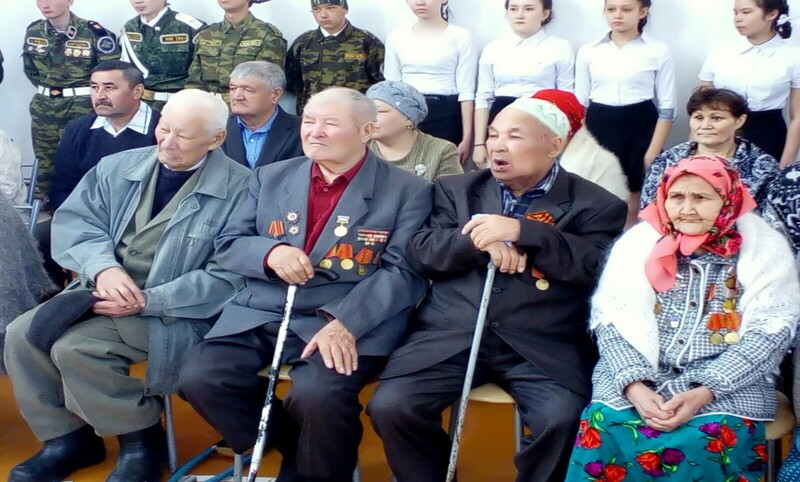
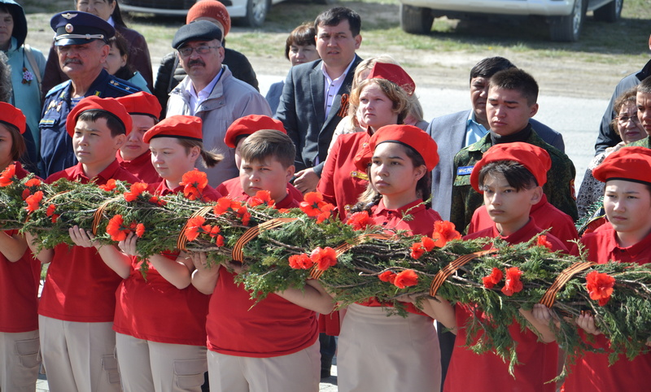
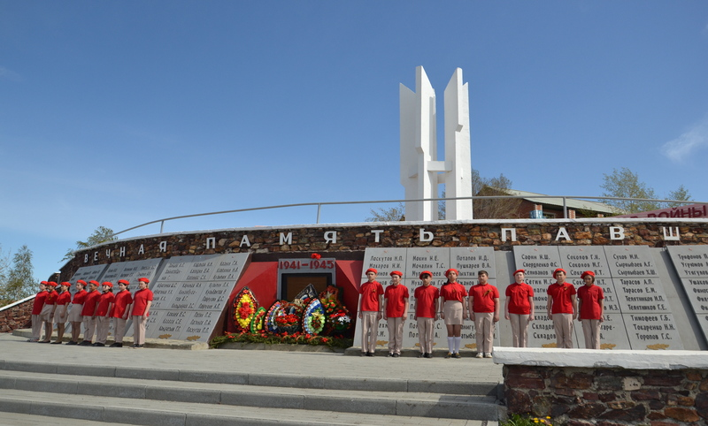
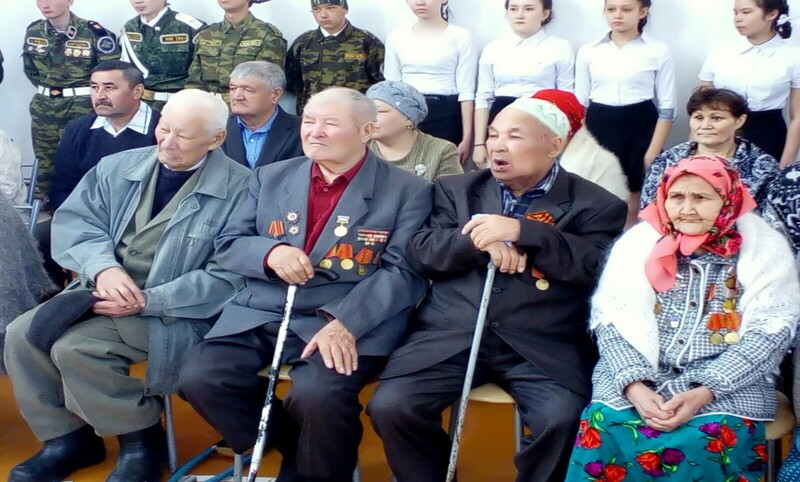
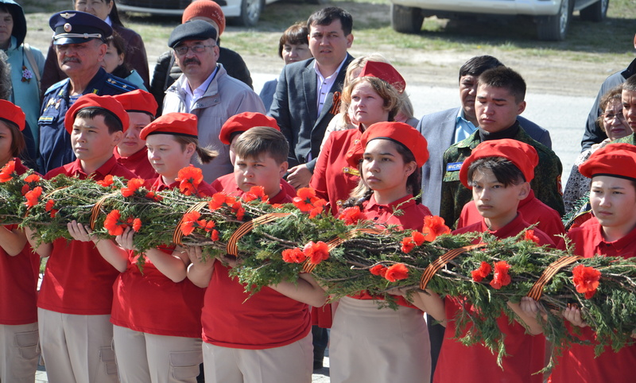
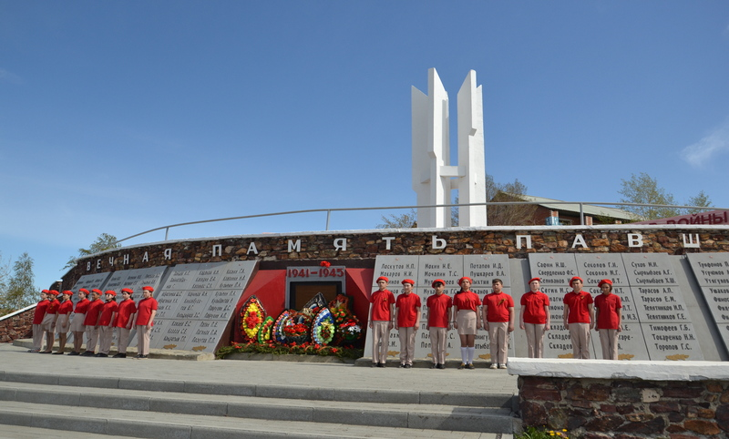

Вклад жителей Баймакского района в Победу в Великой Отечественной войне 1941-1945 годов
На войну из Баймакского района было призвано 13350 человек, 5787 из них не вернулись домой (погибли, пропали без вести, умерли от ран и болезни, в плену в годы ВОВ 1941-1945гг.). Живыми вернулись 7563 бойца. Более 3500 солдат и офицеров были награждены орденами и медалями.
Баймак в 1941-1945гг. стал одним из регионов обеспечения фронта воинами, цветными металлами и сельскохозяйственной продукцией. В 1943 году предприятия треста «Башзолото», расположенные на территории района, дали государству 496 кг. золота, 27630 кг. серебра. Тубинское рудоуправление дало в 1941-1945 гг. 12878 кг. золота, Семеновская ЗИФ – 4817 кг. золота.
На предприятиях местной промышленности изготавливали военные фургоны, сани, сбруи для лошадей. В Темясове и Юлуке на кожзаводах и промартеле шили сапоги, валенки, полушубки и шапки. На конезаводе №46 выращивались «кони РККА». Всего на фронт было отправлено около 1000 лошадей.
Трудящиеся района шефствовали над освобожденной от немецких захватчиков Ворошиловской областью Украины. Было отправлено 300 лошадей, 825 голов КРС, около 1000 голов овец. В 1943 году бригада комсомольцев из 20 человек участвовала в восстановлении Города – Героя Сталинграда. Баймак принял в годы войны 350 семей из Ленинграда, Москвы и Украины.
В годы войны трудящиеся района отправили в Фонд обороны 2023 единиц теплых вещей; на строительство Авиаэскадрилий и других видов вооружения внесли из своих сбережений 2 млн. 293 тыс. руб. Подписались на государственный военный заем на сумму 4 млн. 970 тыс. руб. Было собрано с населения для фронта овчин – 4532 шт., шерсти – 644 кг; полушубок - 1428 шт; валенок - 3319 пар; стеганых телогреек – 517 шт, брюк ватных – 42, шапок – 438, теплых носков – 1150 пар, варежек - 5184 пар и т.д. За самоотверженный труд в годы войны 5559 человек были награждены медалью «За доблестный труд в Великой Отечественной войне 1941-1945гг.».
Герои Советского Союза по району:
1. Миннигулов Тафтизан Тагирович (1922-1943гг.) Родился в д.Кусеево. Работал в колхозе им.Ворошилова и на золотых приисках. В 1941г. был призван в Красную Армию и с апреля 1942 г. участвовал в боях. 20 сентября 1943г. при освобождении населенных пунктов Гомельской области, расстреляв и уничтожив несколько танков противника из миномета, бросился под последний танк со связкой гранат, и не допустил прорыва линии фронта. 15.01.1944 г. посмертно присвоено звание Героя Советского Союза. В с.Кусеево Баймакского района установлен бюст Герою.
2 .Копылов Василий Данилович (16.06.1921-01.04.1966гг.) Работал учетчиком в «Зилаирском» совхозе. В 1939 г. был призван в армию. Командир взвода на фронтах Великой Отечественной войны, выполняя задание командования и самоотверженно сражаясь с неравной силой противника, удержал плацдарм на правом берегу Днепра. В октябре 1944 г. присвоено звание Героя Советского Союза. Возвратившись после войны, работал учетчиком «Зилаирского» совхоза. В 1953г. переехал в г.Челябинск. Умер в 1966 г.
3 . Пименов Иван Тимофеевич (1924-22.06.1943гг.) Работал механизатором Зилаирского зерносовхоза. На фронтах Великой Отечественной войны командовал артиллерийским расчетом. В одном из боев на Курской дуге, оставшись в бою один с гранатой в руке бросился под танк и остановил продвижение противника. 08.09.1943 г. посмертно присвоено звание Героя Советского Союза. В с.Ургаза Баймакского района установлен бюст Герою.
4.Кудимов Павел Васильевич (1899-27.10.1943гг.) Работал на Тубинском руднике. В Великой Отечественной войне участвовал с 1941г. В 1943г. в ожесточенных боях при форсировании Днепра со своим взводом удержал рубеж, ценою собственной жизни. Посмертно, 29.10.1943г., присвоено звание Героя Советского Союза.
5.Белов Федор Иванович (1920-1979гг.) Родился в феврале 1920г. в д.Нижний Авзян в семье крестьянина. Учился в Баймакском горно-металлургическом техникуме, работал на руднике в поселке Тубинск. На фронт был призван в июле 1942 г. Командир орудия 683 артполка старший сержант Белов Ф.И. отличился в ночь на 26 января 1945г. Выдвинув орудие на открытую огневую позицию для поддержки стрелкового подразделения, форсировавшего Одер в районе Олау (Олава, Польша), прицельным огнем подавил огневые точки противника на левом берегу реки, чем способствовал захвату плацдарма. По залитому водой льду расчет в ручную переправил орудие на плацдарм, вместе с пехотинцами в течение ночи отражал контратаки гитлеровцев, прочно удерживал захваченный рубеж. 10 апреля 1945г. присвоено звание Героя Советского Союза. После окончания войны Белов Ф.И. вернулся в Тубинск. В 1948г. окончил областную партшколу. В 1949г. переехал в г.Сибай. Работал на медно-серном комбинате начальником ГО. Когда началось строительство железной дороги Магнитогорск-Сибай, его направили зам.начальником по политчасти. Белов Ф.И. умер в 1979 г. Похоронен в г.Сибай. Его именем названы улицы в Баймаке, Сибае, а в Белорецке установлен бюст Героя
6.Артамонов Владимир Иванович (1906-1944гг.). В армию был призван в 1928г. по комсомольской путевке. Стал авиатором и прошел путь от летчика-инструктора до крупного авиационного начальника. Отважно сражался у р.Халхин-Гол, при этом, за отвагу и героизм он был награжден орденом Красного Знамени и орденом Красного Знамени Монгольской Народной Республики, а 17.11.1939г., Указом Президиума Верховного Совета СССР В.И.Артамонову было присвоено звание Героя Советского Союза. В годы ВОВ Артамонов В.И. командовал авиаполком. Был награжден орденами Отечественной войны II степени, Красного Знамени. Учитывая его умелое руководство, в 1944г. командование назначило его ст.пом.инспектора ВВС по бомбардировочной авиации. Он часто совершал инспекционные вылеты на Дальний Восток и Сибирь. 29 сентября 1944г.,возвращаясь из очередного полета в тайге, недалеко от ст.Хилок, полковник Артамонов потерпел авиакатастрофу.
7.Алибаев Адигам Галеевич (1925-19551гг.).Родился в д.Юмашево. Окончил семилетнюю школу в д.Муллакаево, Темясовское педучилище. Принимал участие в ВОВ, в освобождении Чехословакии, Польши и штурме Берлина. За мужество и героизм был награжден орденом «Слава» всех трех степеней. После войны старшина запаса А.Г.Алибаев вернулся домой, закончил педучилище. Работал учителем, директором Муллакаевской восьмилетней школы. Заочно учился в Магнитогорском пединституте. Умер 12.08.1951г. в возрасте 26 лет, похоронен на сельском кладбище д.Муллакаево. Установлен бюст. В 1987г.в д.Юмашево был установлен памятник А.Г.Алибаеву.
Участники Парада Победы в Москве 24 июня 1945 г.
1.Биктин Зигангир Сайфетдинович (1923-1996). Уроженец д. Юлук. С первых дней Великой Отечественной войны находился на фронте. Награжден боевыми орденами «Красная Звезда», «Отечественная война» II степени. После войны работал председателем Юлукского сельсовета, секретарем исполкома райсовета, заместителем управляющего РО «Сельхозтехника» по снабжению.
2.Буранбаев Карасбай Усманович . Родился в 1924г. в с. Темясово. В Великой Отечественной войне участвовал с 1942 г. в составе отдельной танковой бригады, сражался под Курском, а также в разгроме Японской армии. Награжден орденами Отечественной войны I и II степеней. После войны трудился в лесопромышленном хозяйстве. Жил в деревне Бетеря, умер в 2007 г.
3.Кадыров Шакир Зарифович . Родился в 1923 г. в д. Зиянчурино. Окончил среднюю школу и горно-металлургический техникум в Баймаке. Гвардии старший лейтенант ВВС. Награжден двумя орденами «Красное Знамя», орденами «Красная Звезда», «Отечественная война» II степени. После войны трудился диспетчером, нормировщиком в БМСК г.Сибай.
4.Кунысбаев Имаметдин Шамсутдинович . Родился в 1920г. в д. Алгазы. До и после войны находился на советской работе в бывшем Матраевском районе. Награжден орденами «Красная Звезда», «Отечественная война» II степени и медалями. Умер в 1999 г.
5.Мажитов Галимьян Мустахитдинович (1916-2000). Уроженец д. 2-е Иткулово. Награжден орденами «Красное Знамя», «Красная Звезда», «Слава» III степени, «Отечественная война» II степени. После войны трудился механиком Второиткуловского лесоучастка и Тубинской фабрики.
6.Тутаев Ишмурза Ахметгалеевич (1919-1998). Уроженец д. Исяново. Награжден орденами «Красное Знамя», «Красная Звезда», «Отечественная война» II степени. После войны работал нормировщиком, начальником планового отдела транспортного управления треста «Башмедстрой».
Кавалеры ордена Ленина.
1.Журавлев Даниил Арсентьевич - генерал-полковник артиллерии, г.Баймак;
2.Исянгужин Зайнулла Гибадатович - капитан стрелковой части, д.Чингизово;
3.Рахматуллин Ямалетдин Хисаметдинович - капитан 2 ранга, командир боевого корабля, с.Темясово;
4.Аносов Милентий Петрович, п.Тубинск;
Кавалеры ордена Боевого Красного Знамени.
1.Журавлев Даниил Арсентьевич – генерал-полковник, награжден пятью орденами Боевого Красного Знамени, г.Баймак;
2.Гафаров Шамсутдин Шайхитдинович – герой гражданской войны ,командир Башкирской кавалерийской дивизии, награжден дважды, д.Кульчурово;
3.Саиткулов Гильман Латыпович - подполковник стрелковой части, награжден дважды, г.Баймак;
4.Кадыров Шакир Закирович – старший лейтенант авиации, награжден дважды, г.Баймак;
5.Вандин Михаил Яковлевич, награжден дважды, г.Баймак;
6.Райманов Габит Шарипович, г.Баймак
7.Зайнуллин Талгат Зиганнурович, п.Тубинск;
8.Карманов Иван Силантьевич, д.Ишеево;
9.Янтилин Нурислаам Ямалетдинович, д.Тавлыкаево;
10.Рахматуллин Ямалетдин Хисаметдинович, с.Темясово;
11.Гумеров Исхак Идрисович, д.Мамбетово;
12.Аминев Мухаммед, д.Туркменово (посмертно);
13.Арсланов Миннегул Абдулхакович, с.Темясово;
14.Сулейманов Агзам Юмагужевич, д.I-Иткулово;
15.Махмутов Кираметдин Зиятдинович, д.Билалово;
16.Аминев Абузар Фахрисламович, д.Билалово;
17.Мажитов Галимьян Мустахитдинович, д.2-е Иткулово;
18.Тутаев Ишмурза Ахметгалеевич, д.Исяново (г.Сибай);
19.Хужабаев Салим Салимович, г.Баймак;
20.Азаматов Даут Шагимарданович, д.I-Иткулово (г.Сибай);
21.Больших Григорий Антонович, г.Баймак;
22.Карнаухов Михаил Викторович, п.Тубинск (г.Сибай);
Кавалеры ордена Славы.
1.Алибаев Адигам Галеевич, трех степеней, д.Юмашево;
2.Шубин Георгий Иванович, трех степеней, п.Тубинск;
3.Бычков Иван Павлович, 2 и 3 ст., г.Баймак;
4.Байбулов Сабит Галеевич, 2 и 3 ст., д.Исянбетово (г.Сибай);
5.Салимов Суюндук Шарафутдинович, 2 и 3 ст., д.Баймурза;
6.Султангулов Гадельша Ганеевич, 2 и 3 ст., д.Куватово;
7.Овчаров Владимир Захарович,2 и 3 ст., г.Баймак;
8.Юсупов Гибадулла Мухаметович, г.Баймак;
Кавалеры двух и более орденов Красной Звезды.
1.Кутлугалямов Иштуган Ишбулатович, награжден четырежды, д.Темясово;
2.Мамбеткулов Бадри Мужавирович, награжден трижды, г.Баймак(г.Сибай);
3.Мвмыкин Иван Петрович, награжден трижды, г.Баймак;
4.Мустафин Мирза Махмутович, д.Кульчурово;
5.Кадыров Гайзулла Галиханович, д.Яковлевка;
6.Ширмаев Фатих Х., д.Гадельбаево;
7.Ихсанов Рашит, г.Баймак;
8.Туляков Курбангали Харисович, д.Абдулкаримово;
9.Якупов Султан Усманович, г.Баймак;
10.Кузнецов Петр Павлович, д.Яковлевка;
11.Никляев Леонид Петрович, д.Яковлевка;
12.Лукманов Мансур Ибатуллович, п.Тубинск;
13.Юсупов Рашит Нургалеевич, д.Аминево;
14.Кузьмин Ермолай Анисимович, г.Баймак;
15.Салихов Сабит Мусич, с.Темясово.
Кавалеры ордена Александра Невского.
1.Махмутов Кираметдин Зиятдинович, подполковник, д.Билалово;
2.Фазылов Рашит Хазиахметович, капитан, д.Исянбетово;
3.Галин Махмут Харасович, капитан, д.Карамалы;
4.Гадельшин Галей Ибатуллович,майор, д.Мамбетово;
5.Сулейманов Агзам Юмагужевич,майор, д.I-Иткулово;